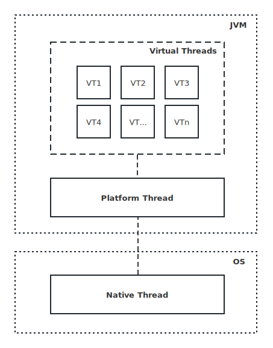

概述
虚拟线程（Virtual Thread）是一种用户态轻量级线程，它在Project Loom中孵化了很久，最早以预览特性的形式出现在Java 19中。它的实现基于协程（Coroutine）的概念，而协程是一种轻量级的线程模型，在一个传统的Java线程内可以运行多个虚拟线程，每个虚拟线程都有自己的执行上下文。虚拟线程的引入旨在解决传统线程的一些问题，比如：线程创建和上下文切换的成本过高等。
虚拟线程与传统线程的差异
Java的每个线程都有一个与之相关联的栈，栈中保存了线程执行的上下文信息，线程的创建和销毁也都需要操作系统进行干预，这需要一定的时间和系统资源，因此线程数量受到限制，应用程序的并发能力也受到相应的影响。而虚拟线程则不需要创建新的栈，它们可以与同一线程内的其他虚拟线程共享栈和执行上下文，从而减少了线程创建和上下文切换的成本，这使得Java应用程序可以在更少的线程上运行，进而提高了性能和可伸缩性。
传统的Java线程模型中，线程的运行是由操作系统的调度器决定的，因此线程的执行顺序和时间是不可预测的。而虚拟线程可以通过编程的方式控制虚拟线程的运行顺序和时间，从而提高应用程序的可预测性。
Java虚拟线程（Virtual Thread）、Java传统线程（Platform Thread）以及OS线程（Native Thread）之间的关系如下图所示：

虚拟线程的优势
除了更高效的资源利用，虚拟线程还具有以下优势：
- 更好的可控性和可伸缩性：传统Java线程是由操作系统管理的，因此它们的创建和销毁通常需要一定的时间和资源。而虚拟线程的生命周期由应用程序管理，这意味着它们可以更容易地被创建和销毁，并且可以更好地控制和调整线程数量；
- 更高的性能和更少的上下文切换：虚拟线程的轻量级实现可以避免昂贵的上下文切换，从而提高性能和响应能力；
- 更好的代码组织：虚拟线程可以使代码更易于组织和维护。它们可以通过将相关任务分配给单个线程来简化代码，并提高可读性和可维护性。
虚拟线程的使用场景
虚拟线程十分适合处理大量并发任务的场景：
- I/O密集型任务：虚拟线程可以避免由于大量的线程导致的上下文切换和内存占用，因此非常适合处理I/O密集型任务，如网络和数据库操作。
- 事件驱动程序：虚拟线程非常适合事件驱动的程序，如Web应用程序或GUI应用程序。它们可以使代码更易于编写和组织，并提高应用程序的响应能力和可伸缩性。
- 大规模数据处理：虚拟线程可以用于处理大规模数据集的计算任务。通过将计算分解成多个任务并将其分配给不同的虚拟线程，可以更好地利用CPU资源，并提高计算性能。
虚拟线程的代码示例
以下代码需运行于Java 19+上，并先开启预览特性开关：--enable-preview
创建单个虚拟线程
Thread.ofVirtual().name("try-JVT").start(() -> { |
import java.util.concurrent.Executors; |
创建大量虚拟线程
在不做池化处理的情况下，创建大量虚拟线程，程序依然能够正常执行，并未像创建大量传统线程那般发生java.lang.OutOfMemoryError: Unable to create new native thread。另外需要注意的一点是，池化技术对于传统线程而言很重要，因为传统线程相关的操作系统资源很宝贵，而对于虚拟线程则恰恰相反，因为虚拟线程的轻量特点，无需对虚拟线程池化处理。
for (int i = 0; i < 100_000; i++) { |
import java.util.concurrent.Executors; |
结束语
虚拟线程（Virtual Thread）是近年来为数不多令整个Java界振奋不已的重要特性，它有望助Java与Go语言在并发编程领域分庭抗礼。
参考资料
- https://openjdk.org/jeps/425